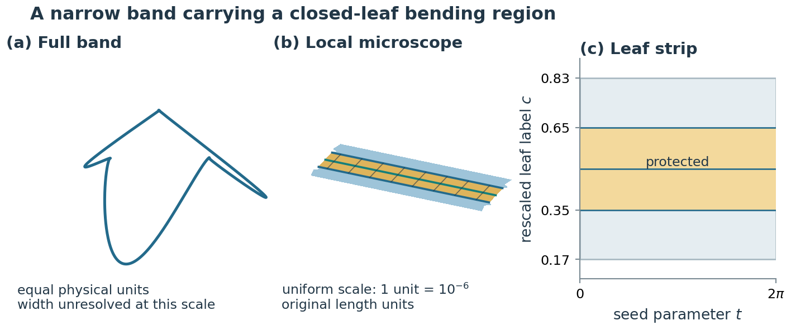
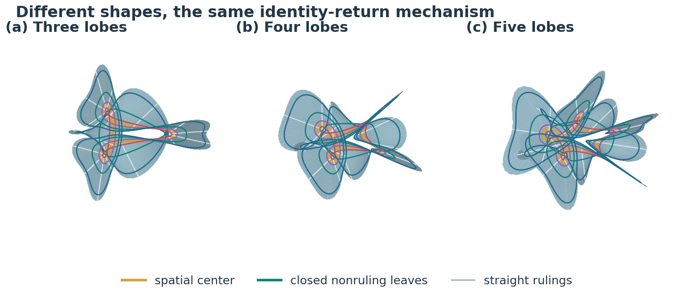
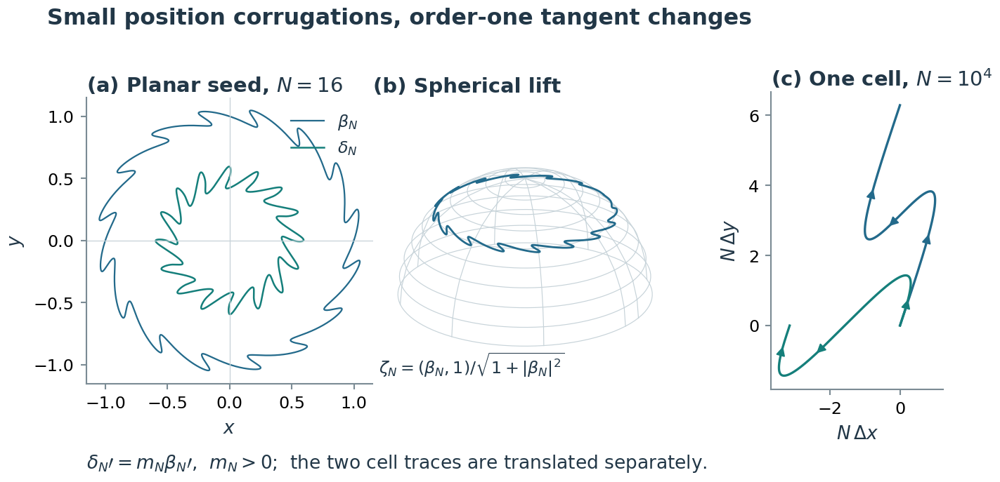
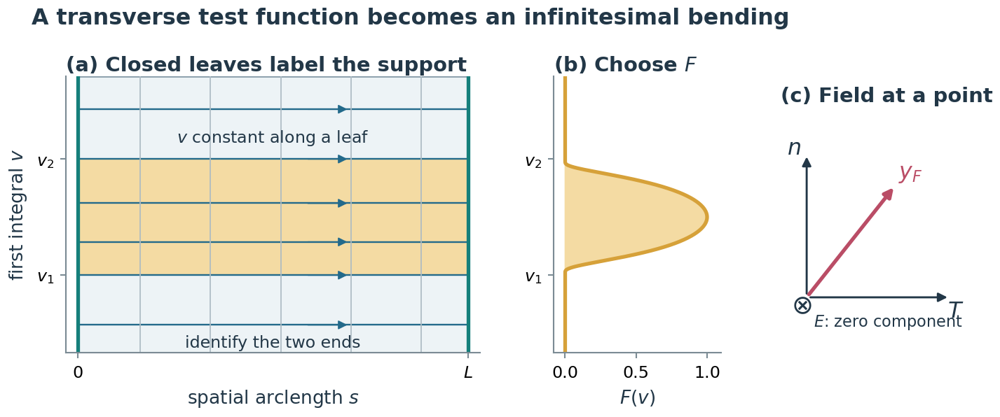
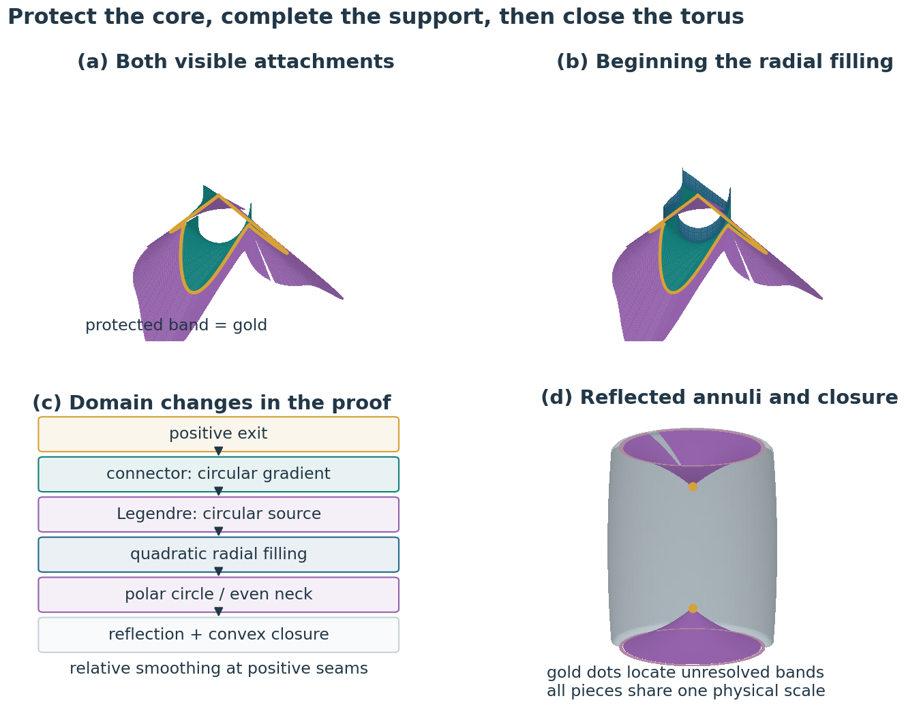
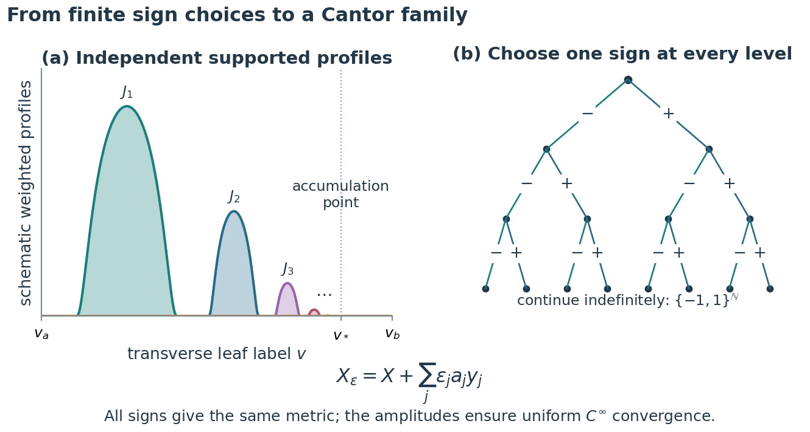

Illustrated construction · ver503
Six illustrated explanations from ver503. Open the PDF link below a figure for its vector original.

The global view locates the actual thin band. The local view uses a rigid rotation and uniform magnification to reveal the rulings and the protected region; global and local panels have distinct scales. Vector PDF

Three-, four- and five-lobed closed tracks illustrate the same identity-return mechanism. Straight rulings and curved members of the other asymptotic family are distinguished. These broad immersions may self-intersect and are separate from the torus completion. Vector PDF

The seed and frame generate the principal-normal ruled surface. The figures compare the drawable spatial center and the corresponding spherical data used to build it. Vector PDF

This explanatory sketch follows the first integral along the non-ruling asymptotic family. A compact profile selects whole closed leaves; its derivatives determine the supported infinitesimal bending. Opposite signs then give exactly equal induced metrics under the zero-strain equation. Vector PDF

The construction schematic traces positive exits, visible connectors, dual quadratic fillings, the radial neck, reflection and convex closure. It describes the intended smooth construction; saved 3D completion meshes still require internal relative smoothing. Vector PDF

This sketch shows how disjoint supported fields and rapidly decaying amplitudes encode sign sequences. The paper discusses the Cantor-family construction; the current Lean project defers that extension and has not certified the full family. Vector PDF